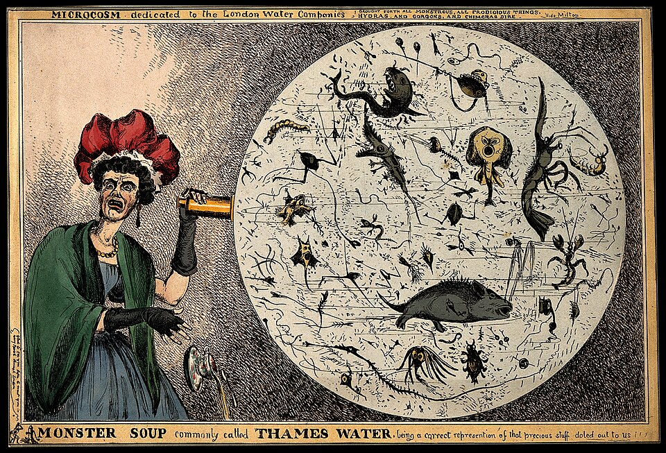
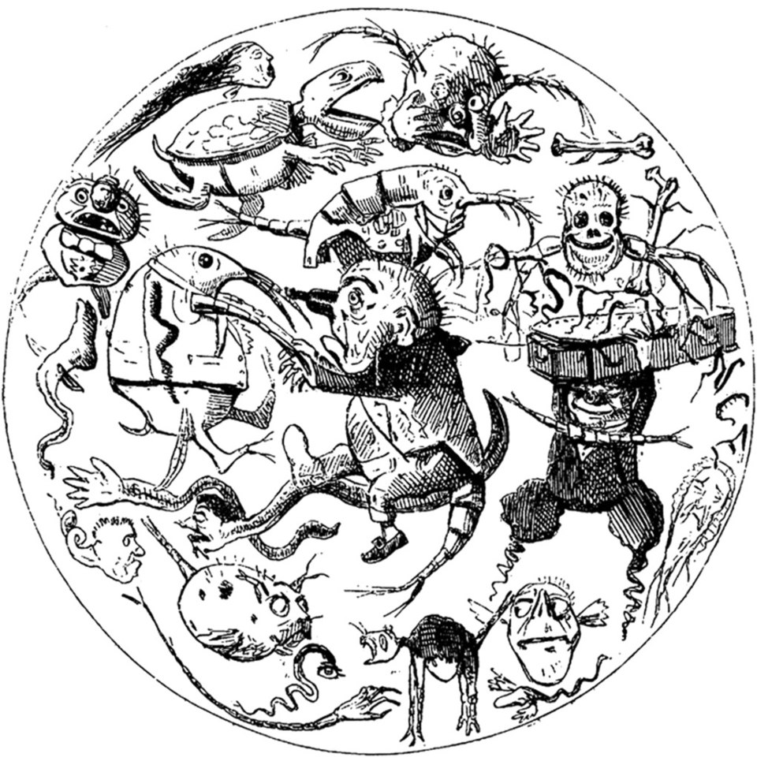
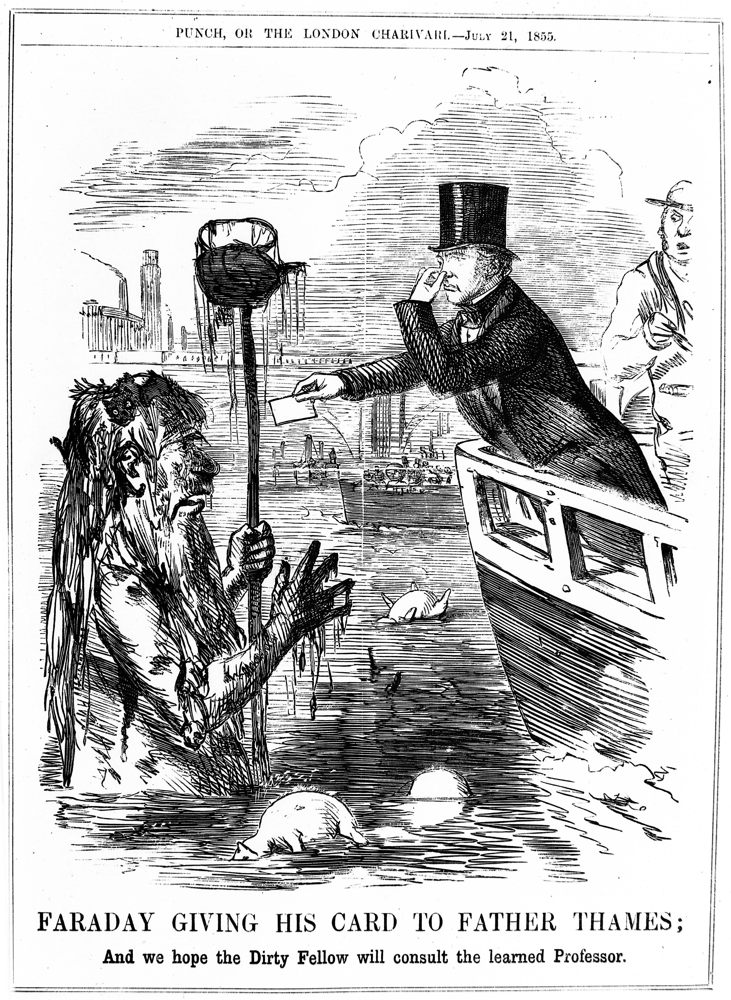
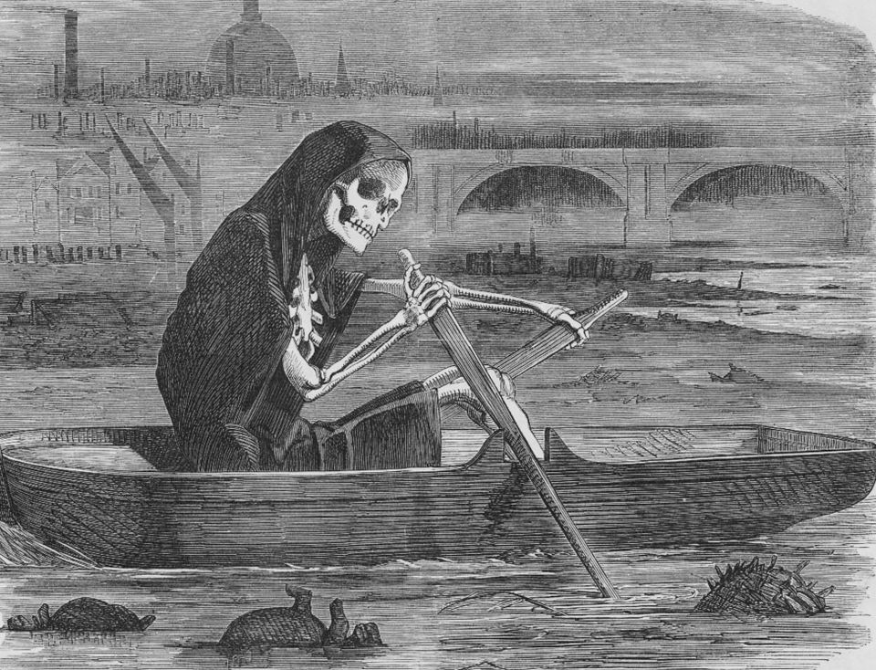
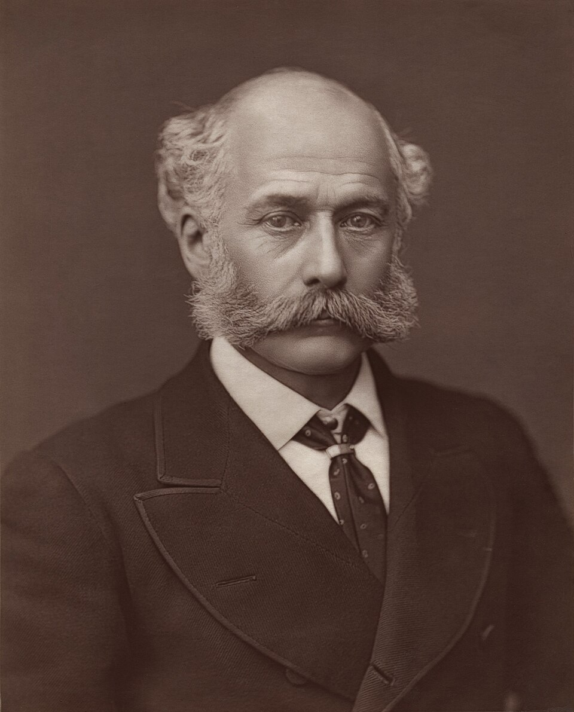

Part I: The Royal River Becomes a Toilet
The River Thames had been called the "silver Thames" and the "royal river" for centuries — the pride of England's greatest city. By 1858, it had become a brown, bubbling open sewer.
London was the largest city in the world, with a population exceeding 2.5 million, doubled from just 1800. Every human being in that city produced waste. And there was nowhere for it to go.
Most houses used cesspits — brick-lined holes in the ground. But the Metropolitan Commission of Sewers had been connecting houses to brick sewers, which emptied directly into the Thames. Then, in the 1850s, flushing toilets exploded in popularity — they were showcased at the Great Exhibition of 1851. Suddenly, thousands of households could flush their waste straight into the city's waterways.
The Thames became, in the words of Charles Dickens writing in Little Dorrit (1857):

"Through the heart of the town a deadly sewer ebbed and flowed, in the place of a fine fresh river."
In 1855, the scientist Michael Faraday visited the Thames with a simple experiment. He dropped white cards into the river and watched them disappear before they sank even one inch. He wrote to The Times:
"Near the bridges the feculence rolled up in clouds so dense that they were visible at the surface, even in water of this kind. The smell was very bad, and common to the whole of the water; it was the same as that which now comes up from the gully-holes in the streets; the whole river was for the time a real sewer."


In response, the government did what any rational administration would do: they poured chalk lime, chloride of lime, and carbolic acid into the river. It had no meaningful effect.
Part II: The Cholera Plague
The smell wasn't just disgusting — it was terrifying. Three cholera epidemics had devastated London before 1858, killing tens of thousands:
Cholera was fast-acting and ghastly. Victims could go from healthy to corpse-blue to dead in hours.
In 1854, Dr. John Snow traced a cholera outbreak on Broad Street in Soho to a contaminated water pump. He famously removed the pump's handle, stopping new cases. He had published his theory that cholera spread through contaminated water, not bad air.
Virtually nobody believed him.
The dominant medical theory was miasma — the idea that disease was spread through "bad air" or noxious vapors. Social reformer Edwin Chadwick insisted that "all smell is disease" and pushed for flushing sewers into the Thames, thinking running water would carry away the miasma. It made things immeasurably worse.
Ironically, Dr. Snow died in 1858, during the Great Stink — the largest "miasmatic" event in London's history, which failed to produce any new cholera outbreak, thereby proving his waterborne theory by the sheer fact that the worst smell ever hadn't killed anyone directly.
Part III: The Summer That Broke
Summer 1858 was hot and dry. London hit temperatures above 30°C (86°F). The Thames dropped to an unusually low level, exposing raw sewage baked into the riverbanks.
The stench became inhuman. People reportedly vomited simply by going near the river. Those who could afford to fled the city. Others stayed indoors, soaking their curtains in chloride of lime to filter the air.
And it was directly under the windows of the Houses of Parliament.

Benjamin Disraeli — yes, that Disraeli, soon-to-be Prime Minister — was in Parliament that summer. He described the Thames as a "Stygian pool, reeking with ineffable and intolerable horrors." Parliament was literally being driven out.
So they did what governments do when they can no longer ignore a crisis: they passed a bill. And remarkably, they did it fast.
🏛️ 18 Days From Crisis to Law
- Parliament passed the Metropolis Local Management Amendment Act of 1858
- Provided funding for a new sewer system
- No filibuster, no delay, no committee studies
- Benjamin Disraeli presented the bill himself
Part IV: The Man Who Saved London

Sir Joseph William Bazalgette
1819–1891 · Chief Engineer, Metropolitan Board of Works
A civil engineer who had previously worked in the railway industry until overwork caused a serious breakdown in his health. He joined the Metropolitan Commission of Sewers and was promoted to Chief Engineer.
By June 1856, Bazalgette had already completed his plan for a revolutionary sewer system — but it had been repeatedly rejected before Parliament. The Great Stink gave it the political will it needed.
📐 The Plan by the Numbers
- 82 miles (132 km) of main brick-lined interceptor sewers
- 1,100 miles (1,800 km) of street-level drains
- 318 million bricks
- 2.7 million cubic meters of excavated earth
- 670,000 cubic meters of concrete
- Two feet per mile consistent gradient — gravity doing the work
- Designed for 4.5 million people. Today serves 9.5 million.
- Cost £6.5 million — over £650 million today
He insisted on using Portland cement — an expensive, water-resistant cement — over cheaper alternatives. The strength of that cement is why his sewers still stand today.
"Few people have done more to change the River Thames, or London, than Joseph Bazalgette." — London Museum
Part V: Engineering the Impossible
Construction began in early 1859 and wasn't completed until 1875 — sixteen years of digging beneath one of the world's great cities.
Thousands of laborers excavated the tunnels by hand. The demand was so intense that bricklayers' wages rose by 20% across London. Entire "lost rivers" — the Fleet, the Tyburn, and others that had once been natural streams running through London — were encased in brick and converted into underground sewage channels.
To create the necessary gradient, Bazalgette needed to build massive embankments along the Thames. Three of them rose from the river: Victoria, Chelsea, and Albert. These stone constructions reclaimed about 22 acres of land from the Thames and also created space for the new Underground railway lines beneath them. You'd know them today as the walkways along the river on the north and south sides.
Two ornate pumping stations — Crossness (on the Erith Marshes) and Abbey Mills (in Stratford) — were built to lift the sewage into higher pipes. These were no mere utility buildings. They were Victorian cathedrals of engineering — Grade I listed buildings today, protected by English Heritage.
Part VI: The Legacy
After 1858, cholera never returned to London. The system worked so well that for over a century, Londoners walked the Victoria Embankment, took the Underground beneath it, and never gave a thought to the engineering miracle flowing beneath their feet.
But Bazalgette's system wasn't perfect. It dumped raw, untreated sewage downstream. In 1878, the paddle steamer Princess Alice collided with a coal ship near the Crossness outfall, where raw sewage had just been pumped into the Thames. About 650 people drowned, and some who survived the drowning also died from swallowing the untreated sewage. The tragedy drove the construction of proper sewage treatment plants.
Today, London faces a different problem: fatbergs — massive congealed masses of discarded cooking oil, wet wipes, and other debris. The Whitechapel Fatberg of 2017 was 250 meters long and weighed 130 tonnes.
In 2016, construction began on the Thames Tideway Tunnel — a new "super sewer" at 25 km long and 7 meters wide. A modern descendant of Bazalgette's original vision, adapted for a 21st-century city of 9.5 million people.
The Timeline
-
c. 1800London population: ~1 million. The River Thames is still navigable and fishable.
-
1828"Monster Soup commonly called Thames Water" — William Heath's satirizing print of contaminated water.
-
1831–32First major cholera epidemic kills 6,536 in London.
-
1834John Martin proposes a sewer system to preserve sewage for agriculture. Ignored.
-
1848–49Second cholera outbreak kills 14,137. Edwin Chadwick urges "all smell is disease."
-
1851The Great Exhibition showcases flushing toilets — inadvertently making things far worse.
-
1853–54Third cholera outbreak kills 10,738. Dr. John Snow removes the Broad Street pump handle.
-
1855Michael Faraday tests Thames water — "opaque pale brown fluid. The whole river was for the time a real sewer."
-
July–August 1858The Great Stink. Extreme heat turns the Thames into an unbearable open sewer. Parliament acts in 18 days.
-
1859Construction begins. Thousands of workers dig by hand beneath the city.
-
1865System officially opened.
-
1875Construction completed. 1,182 miles of sewers. 318 million bricks. Still working.
-
1878Princess Alice disaster — 650 dead near sewer outfall. Drives the creation of sewage treatment plants.
-
1891Bazalgette dies. London population 5.5M — his sewers still easily handle it.
-
2017Whitechapel Fatberg: 250m long, 130 tonnes. The problem hasn't gone away — it's evolved.
-
2016–ongoingThames Tideway Tunnel: a 25km "super sewer" — Bazalgette's vision, scaled for 9.5 million people.